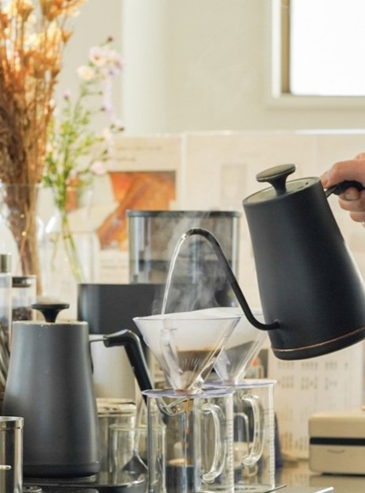
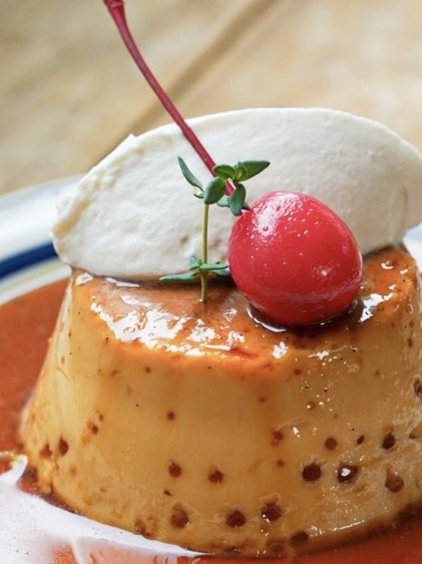
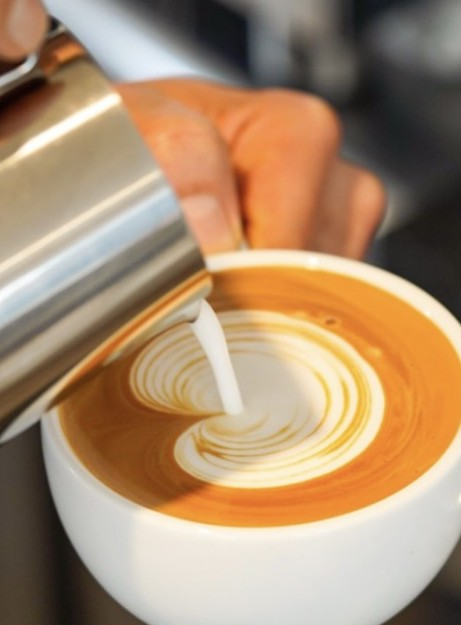
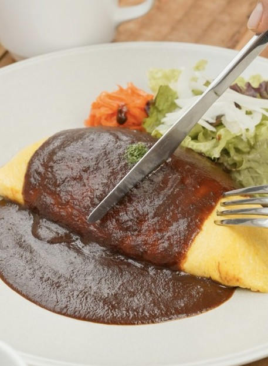
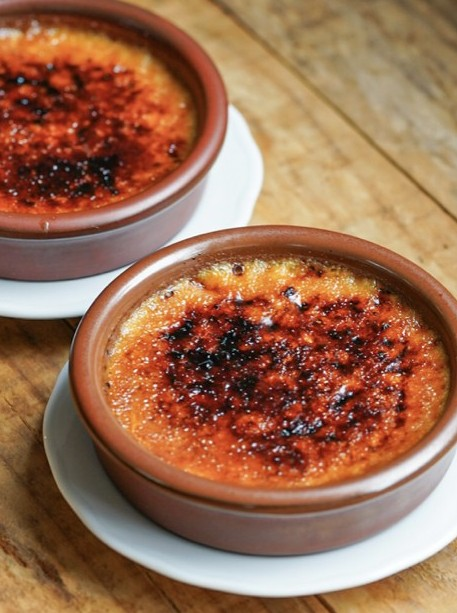

Morning
Ochiai / All day cafe restaurant
UNITY CAFE
朝は軽やかに、昼はしっかり、午後は甘く、夜はゆっくり。落合の2階で過ごすカフェレストラン。
Concept
今日はどんな時間を過ごそう。食事も、甘いものも、コーヒーも。
木のテーブルに白い皿、湯気の立つコーヒー、丁寧に仕上げた洋食と自家製スイーツ。 ひとりでひと息つきたい日も、誰かとゆっくり食事をしたい日も、気分に合わせて立ち寄れる場所です。


All Day
朝から夜まで、気分に合わせて。
プレートで始める朝、洋食を楽しむ昼、甘いものでほどける午後、できたてのパスタで過ごす夜。
Lunch
オムライスと洋食プレート
11:00 - 15:00Cafe
プリン、ケーキ、季節の甘いもの
15:00 - 18:00Dinner
できたてパスタで夜の食事
18:00 - 22:00Hand Drip Coffee
一杯ずつ、丁寧にドリップ。
注文ごとに豆の香りを立たせながら、ゆっくりお湯を落として淹れるコーヒー。 食事のあとも、午後のひと息にも、落ち着いて過ごせる一杯です。
Gallery
写真で伝える、お店の温度
内観、ハンドドリップ、食事、スイーツ。来店前に過ごし方が想像できる写真を並べています。



Information
UNITY CAFE
- Address
- 東京都新宿区上落合2-28-1 ワールドビル 2F
- Access
- 東京メトロ東西線 落合駅 2a出口より徒歩2分
- Hours
- 月 9:00 - 18:00 / 火-日・祝 9:00 - 22:00
- Last order
- 月 料理17:00・ドリンク17:30 / その他 21:30
Reservation
ご予約・最新情報は公式Instagramへ
来店前の確認やお知らせは、公式Instagramをご覧ください。
公式Instagram